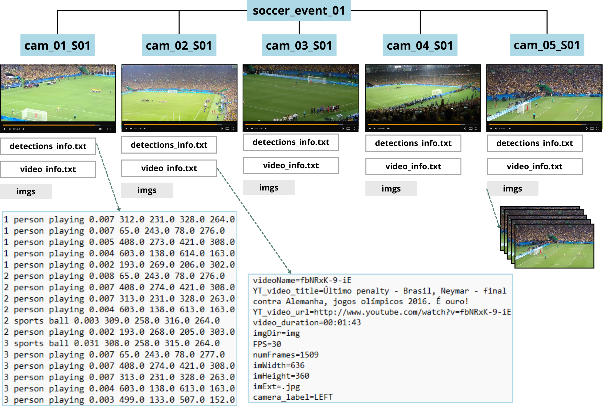

Data Details

Each video is accompanied by metadata including camera identification, YouTube URLs, extracted frames, and object annotations.

The dataset addresses common challenges in user-generated videos, such as shaking, occlusions, blurring, and abrupt movements.